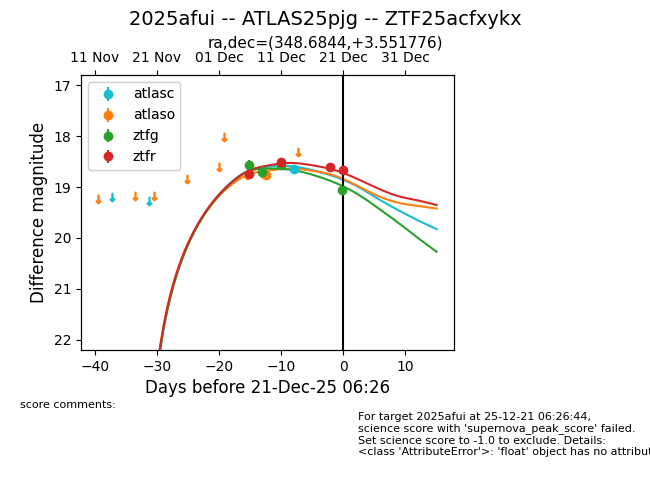
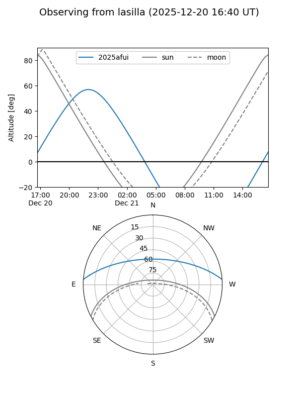
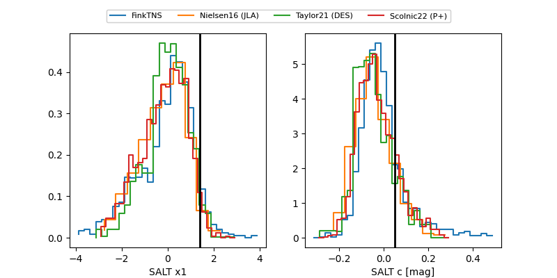

2025afui
Target 2025afui at 2025-12-21 03:17
Aliases and brokers:
FINK: fink-portal.org/ZTF25acfxykx
Lasair: lasair-ztf.lsst.ac.uk/objects/ZTF25acfxykx
ALeRCE: alerce.online/object/ZTF25acfxykx
TNS: wis-tns.org/object/2025afui
YSE: ziggy.ucolick.org/yse/transient_detail/2025afui
alt names
ZTF25acfxykx (ztf,fink_ztf)
2025afui (tns,yse)
ATLAS25pjg (atlas)
Coordinates:
equatorial (ra, dec) = 348.6844,+3.55178
equatorial (HMS+DMS) = 23:14:44.25,+03:33:06.40
galactic (l, b) = (81.9396,-51.45570)
Flags:
Photometry:
last atlasc=18.65, atlaso=18.76, ztfg=19.06, ztfr=18.62
1 atlasc, 1 atlaso, 4 ztfg, 3 ztfr detections
Lightcurve

Visibility


Additional plots
